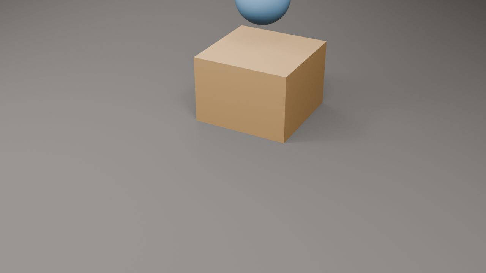
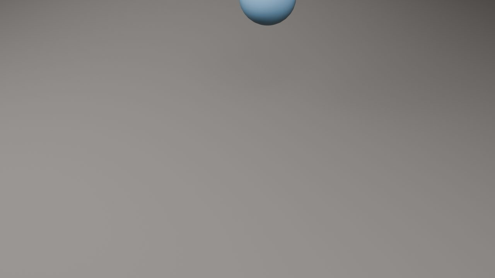
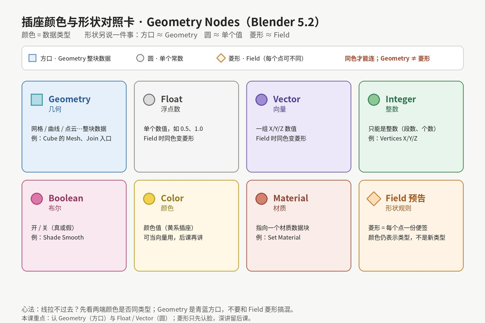
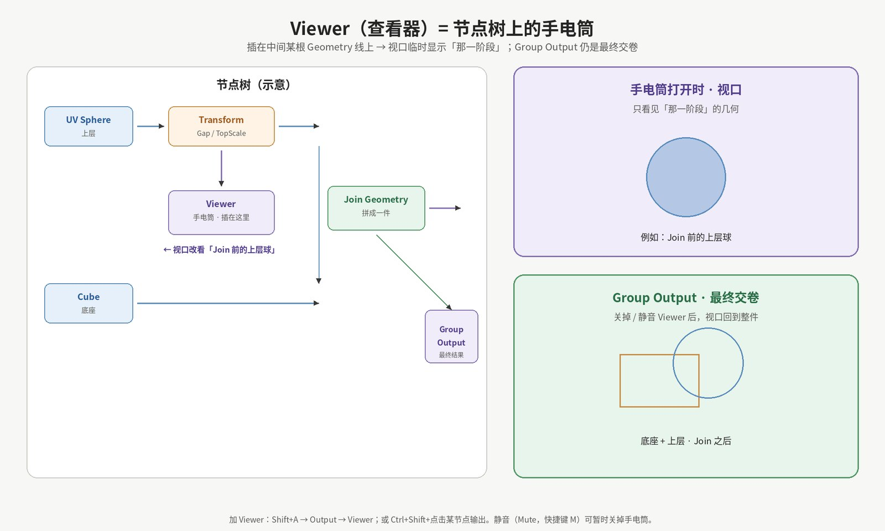
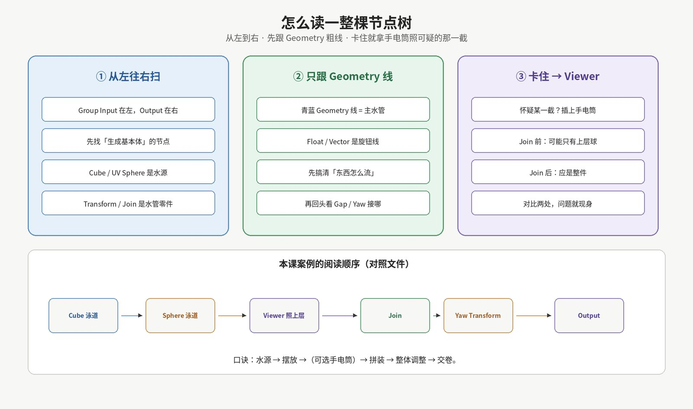

第 3 课 · 读节点编辑器与 Viewer：插座颜色、连线、用手电筒看清中间结果
衔接说明
第 1 课你已经会：打开 Geometry Node Editor、挂修改器、造出第一块网格。
第 2 课你已经会：Transform Geometry 整块挪动，以及 Join Geometry 把两件拼成一件。
今天不讲 Field 公式，也不讲 Instance on Points。我们只练一件「修水管必备技能」：
读懂节点编辑器里的插座与连线，并用 Viewer（查看器）当手电筒，确认某一截水管里现在流着什么。
目标软件：Blender 5.2 LTS。节点名用 英文官方名，旁边用中文解释。
这节课你要带走什么
学完这一课，你应该能自信地说出并亲手做到：
- 认插座颜色 / 形状：至少能辨认 Geometry（几何）、Float（浮点）、Vector（向量）；知道颜色对不上就连不上。
- 读连线（noodles）：知道 Geometry 粗线是主水管，Float / Vector 是旋钮线；读树时先跟主水管。
- 会用 Viewer（查看器）：能加一个 Viewer，接到中间某个 Geometry 插座上，让视口临时显示「那一阶段」的几何。
- 分清 Viewer 与 Group Output：Viewer 是手电筒（临时照看），Group Output 是交卷（最终结果）；两者可以同时存在。
- 会排查：故意断一根线或看错阶段时，能用 Viewer 对比「Join 前」和「Join 后」，把问题定位到某一截。
本课故意不讲： Field 怎么算、Attribute、Instance on Points、Set Position 逐点公式。Field 插座今天只「认个脸」，深讲留后课。
先讲为什么：看不见中间结果就只能盲猜
第 2 课的树已经有两条泳道、一个 Join、一个整体 Yaw。
树一长，最常见的崩溃不是「不会加节点」，而是：
「我明明接了，为什么视口里只有一件？是 Scale 成 0 了，还是根本没进 Join？」
如果只能看见 Group Output 吐出来的最终画面，你就像只看得到水龙头，却看不到中间哪节管子堵了。
Viewer 的作用，就是给你一支手电筒：
插在某一截 Geometry 线上，视口立刻改看「流到这里为止」的东西。
照一下 Join 前——也许只有蓝球；再照一下 Join 后——应是方块+球。对比一出，问题自己现身。
今天我们用「读编辑器 + 手电筒」把第 2 课那棵树读透，顺便把插座颜色这件事一次讲清。
案例先打开：先看结果，再拆菜谱
请先下载并打开案例文件：
案例文件：L03_read_editor_and_viewer.blend
场景主物体名：L03_Read_Editor_Viewer。
节点组同名：L03_Read_Editor_Viewer。
选中物体，看 Modifier Properties（和 L02 同款三个旋钮，默认略有调整）：
| 参数 |
默认大约 |
你拧它时会发生什么 |
| Gap |
0.9 |
上层球沿 Z 升高 / 降低 |
| TopScale |
0.5 |
上层球整体变大 / 变小 |
| Yaw |
0.35 |
整件绕 Z 旋转；单位是 弧度（0.35 ≈ 20°） |
打开 Geometry Node Editor，在节点组里你会看到：
除了熟悉的 Cube / UV Sphere / Transform / Join 之外，还有一个已经接好的 Viewer，挂在「上层 Transform 之后、Join 之前」。
那就是本课预埋的手电筒——先别急着删，后面会带你拧它、静音它、换插口。
案例渲染参考（Eevee 棚拍光，保持原样）：

案例最终结果 · 斜角

手电筒看「Join 前上层」时的等价画面
说明：第一张是 Group Output 交卷后的整件（底座+球）。
第二张用场景里的辅助物体 L03_Viewer_Mid_Preview 渲染，模拟 Viewer 插在 Join 前 时视口会强调的「只剩上层球」阶段（真实 Viewer 是编辑器里的临时预览，渲染器不会直接「拍出 Viewer」；这张是教学对照）。
你本机主题、角度不同，颜色阴影略有差别完全正常。
文件里还有一个隐藏的辅助物体 L03_Viewer_Mid_Preview（默认在视口/渲染中隐藏）。它只输出「上层球 Transform 后」的几何，方便你对照理解；本课操作主战场仍是主物体上的 Viewer 节点。
概念一：插座颜色对照
请先看概念图：

插座颜色对照卡
一句话
颜色告诉你数据类型（Geometry / Float / Vector…）；形状另说一件事：圆 ≈ 单个值，菱形 ≈ Field（每个点可以不一样）。
类型不匹配，Blender 就不让你连——这不是坏了，是编辑器在保护你。
先分清两件事（5.2 界面）
- 颜色 = 类型
青蓝 / 青绿 ≈ Geometry（整块几何）；灰 ≈ Float；蓝紫 ≈ Vector；绿 ≈ Integer；粉 ≈ Boolean……
- 形状 = 单个值还是 Field
- 圆：单个常数（整根水管一个数）
- 菱形：Field（每个点可以不同）
- 方口 / 偏方：常见于 Geometry 这类「整块数据」插座（例如 Cube 的 Mesh 输出）——不是菱形
旧稿曾把 Geometry 写成「偏菱形」，那是错的。请以你软件里 Cube 上那个青蓝 方口 Mesh 为准。
本课要认得的几张「脸」
| 英文类型 |
常见样子（约，Blender 5.2） |
中文直觉 |
本课例子 |
| Geometry |
青蓝 / 方口 |
一整块几何（网格等） |
Cube 的 Mesh 输出、Join 的入口 |
| Float |
灰色圆（或菱形 Field） |
一个小数 |
Gap、TopScale、Yaw |
| Vector |
蓝紫圆（或菱形 Field） |
三个数绑在一起 |
Translation、Scale、Rotation；Cube 的 UV Map 常是紫色菱形 |
| Integer |
绿系圆 |
整数 |
Vertices X/Y/Z、段数 |
| Boolean |
粉红系圆 |
开 / 关 |
Shade Smooth 的开关 |
| Color |
黄/紫系 |
颜色 |
本课不深讲 |
| Material |
偏暖 |
材质数据块 |
Set Material 的 Material 口 |
| Field（预告） |
同色菱形 |
「每个点一张便签」 |
后课再学；今天只认「菱形 ≠ Geometry」 |
重要边界（先记住）
- 同色 / 兼容 → 通常能连。
- Geometry 连到 Float → 拉不过去。
- 有些转换节点可以「翻译」类型，但那是后话；本课先养成 先看颜色再连线 的习惯。
- 概念对照卡已按 Blender 5.2 重绘：Geometry = 青蓝方口；圆 = 单值；菱形 = Field。
概念二：连线（noodles）与类型匹配
连线是什么
节点之间的曲线叫 noodles（面条线 / 连线）。
在 Geometry Nodes 里，你可以把它想成 水管：
- Geometry 线：主水管，流着「东西本身」。
- Float / Vector 线：旋钮线，流着「怎么扭、扭多少」。
怎么连、怎么断
- 连：从输出插座拖到输入插座（类型要匹配）。
- 断：抓着线扯下来，或选中后删除。
- 换插：拖到新插座上；旧连接通常会断开（视具体插座而定）。
读树时的优先级
面对一棵乱树，请按这个顺序：
- 先找 Geometry 主水管：从基本体 → Transform → Join → Output。
- 再回头看 Gap / TopScale / Yaw 这些 Float 是从 Group Input 插进哪根旋钮的。
- 不要一上来就盯着所有小线——会晕。
这和读电路图一样：先跟电源主线，再跟开关支线。
概念三：Viewer 当手电筒
请看概念图：

Viewer 手电筒
一句话
Viewer = 插在节点树中间的手电筒。
它让视口临时显示「流到这一截为止」的 Geometry；
Group Output 仍然是最终交卷，不会因为你打开手电筒就丢了。
怎么加 Viewer
常用两种方式（Blender 5.2）：
- 菜单：在节点编辑器里
Shift+A → Output → Viewer。
- 快捷：
Ctrl+Shift+点击 某个节点的输出（或节点本身，视keymap），常会自动挂上 / 切到 Viewer。
案例文件里已经放好了一个 Viewer，标签类似：「Viewer · 手电筒（Join 前上层）」。
接到哪里
把 Geometry 线接到 Viewer 的 Geometry 入口。
本课预埋位置：上层 Transform Geometry 的输出 → Viewer（在 Join 之前）。
于是：
- 手电筒打开时，视口强调的是「已经摆好、缩放过、但还没和底座 Join」的上层球。
- Group Output 那条路仍然完整：Join → Yaw → 交卷。
视口会显示什么
- 有活动的 Viewer 且接着有效 Geometry：视口按 Viewer 预览（编辑器上下文中）。
- 静音（Mute）或删掉 Viewer / 断开线：视口回到看 Group Output 的最终结果。
静音与删除
| 操作 |
作用 |
| 选中 Viewer，按 M（Mute） |
暂时关掉手电筒，线还在，随时再开 |
| 删除 Viewer 节点 |
手电筒拿走；不影响主水管（只要你没误删主线） |
| 把 Viewer 改接到别的 Geometry 口 |
手电筒换地方照 |
Viewer vs Group Output（务必分清）
|
Viewer |
Group Output |
| 角色 |
手电筒 / 临时预览 |
交卷 / 修改器真正输出 |
| 能不能有多个 |
可以加多个，通常一个「当前活动」的最醒目 |
一组节点一般一个 Geometry 结果口 |
| 渲染 / 导出看谁 |
一般不直接当最终渲染结果 |
最终结果看它 |
| 教学用法 |
查中间阶段、对比前后 |
交付整件 |
口诀：手电筒用来查案，Output 用来交卷。
手把手：在案例树上用 Viewer 查两处
下面假设你已打开案例 L03_Read_Editor_Viewer，节点编辑器里能看见整棵树。
步骤 A：先确认预埋的手电筒
- 找到标签含 Viewer、接在上层 Transform 后面的那个节点。
- 确认它的 Geometry 入口来自 Transform Geometry (top)，而不是来自 Join 之后。
- 在节点编辑器里让这个 Viewer 处于可用状态（若被 Mute，再按一次 M 取消静音）。
- 观察视口：你应更明显地感到「现在在看上层球这一阶段」（若界面仍显示整件，检查是否选中了带该节点组的物体、以及 Viewer 是否接好）。
步骤 B：把手电筒改插到 Join 之后
- 断开 Viewer 与上层 Transform 之间的线（或另加一个 Viewer，避免弄乱预埋）。
- 从 Join Geometry 的 Geometry 输出，拖一根线到 Viewer。
- 此时手电筒照的是「已经拼好、但可能还没过最终 Yaw」或「Join 出口」——应能看到底座+球都在。
- 再对比步骤 A：Join 前只有上层；Join 后是整件。
这一对比，就是 Viewer 存在的全部意义。
步骤 C：再照一次最终 Yaw 之后（可选）
- 把 Viewer 接到 Transform Geometry (Yaw) 的输出（Group Output 正前方）。
- 这应与最终交卷几乎一致——你在确认「最后一截水管也是通的」。
步骤 D：静音，回到交卷视图
- 选中 Viewer，按 M 静音。
- 视口回到 Group Output 的最终整件。
- 再按 M 恢复手电筒。
养成习惯：查完就静音，避免自己忘记「为什么视口只显示半件」。
怎么读一整棵树
请看概念图：

怎么读一整棵树
三步阅读法
- 从左往右扫
Group Input 在左，Group Output 在右。先找到水源：本课是 Cube 与 UV Sphere。
- 只跟 Geometry 粗线
底座：Cube → … → Transform → Join
上层：UV Sphere → … → Transform → Join
汇合：Join → Transform(Yaw) → Group Output
旋钮线（Gap / TopScale / Yaw）第二遍再读。
- 卡住 → 上手电筒
怀疑 Join？照 Join 前、Join 后。
怀疑上层 Transform？照 Transform 前、后。
不要凭空猜，让视口举证。
本课案例阅读顺序（对照文件）
Cube 泳道 ──┐
├─ Join → Yaw Transform → Group Output
UV Sphere ──┘
│
└─（支路）Viewer 手电筒可插在这里查「Join 前上层」
口诀：水源 → 摆放 →（可选手电筒）→ 拼装 → 整体调整 → 交卷。
小练习（做完才算上完课）
- 故意断一根线
断开上层 Transform → Join 的 Geometry 线。
最终视口应只剩底座（或缺上层）。
用 Viewer 分别照「上层 Transform 出口」和「Join 出口」，用嘴巴说出两处差别。
做完把线接回去。
- 手电筒搬家
把 Viewer 从「Join 前」改到「Join 后」，再改到「Yaw 后」。
每搬一次，写三个字笔记：看见了什么。
- （可选）第二支手电筒
再加一个 Viewer，一只照上层，一只照底座（底座 Transform 出口）。
体会：多支手电筒时，你要清楚「当前活动的是哪一只」（以你视口实际预览为准）。
- （可选）对照辅助物体
在 Outliner 里临时取消隐藏 L03_Viewer_Mid_Preview，对比主物体最终结果——那是「Join 前上层」的长期可见版；看完请重新隐藏，避免场景打架。
常见卡点
1. 加了 Viewer，视口没变化
- 物体是否选中？节点组是否就是当前修改器用的那一个？
- Viewer 的 Geometry 入口是否真的接上了？
- Viewer 是否被 Mute 了？
- 是否接错到空的 / 被静音的上游？
2. 线怎么都拉不到 Viewer 上
- 你拖的是不是 Geometry 输出？Float 拖不过去是正常的。
- Blender 5.2 的 Viewer 用动态插座：先确保 Viewer 上有 Geometry 类入口（案例里已建好；若自己新建后是空的，可再连一次 Geometry 或检查 Viewer items）。
3. 手电筒一直开着，我以为树坏了
- 视口只显示半件时，先看有没有活动的 Viewer。
- 先按 M 静音，再判断树是否真的坏了。
4. Viewer 和 Group Output 我分不清谁说了算
- 修改器最终结果 / 渲染交卷 → 看 Group Output。
- 编辑时临时预览中间阶段 → 看 Viewer。
- 两者同时存在完全正常。
5. 和案例第二张图不一致
- 第二张是「Join 前上层」的教学对照渲染，不是要求你像素级对齐。
- 以「Viewer 插在不同位置时，阶段是否变对」为准。
6. 想深挖 Field 菱形插座
- 先忍住。今天只认脸。Field 一展开就是另一门课；我们按从零节奏走。
收工检查清单
下节预告
第 4 课我们继续留在「整块几何」的世界里，但多问一个关键：
Set Position 与 Transform Geometry 的差别（仍用 Viewer 验证）
- Transform：整块一起挪 / 转 / 缩放（你已会）。
- Set Position：开始碰「位置」插座——我们会用最朴素的方式做整块偏移对比，仍然不讲 Field 公式。
- 全程继续用手电筒确认：改的是哪一截、视口该看到什么。
Field 深水继续后移；先把「整块变换 vs 写位置」的边界立住。
本课文件一览
| 类型 |
路径 |
| 课件 |
lessons/L03_read_editor_and_viewer.md |
| 案例 |
blends/L03_read_editor_and_viewer.blend |
| 配图 |
assets/L03/（视口/对照渲染 ×2 + 概念图 ×3） |
| 脚本 |
scripts/create_L03.py、scripts/gen_l03_illustrations.py |
Google Drive 同步文件夹：课程根目录 GeometryNodesCourse（与云电脑同结构）。
L03 · Read the Node Editor & Viewer · Blender 5.2 LTS